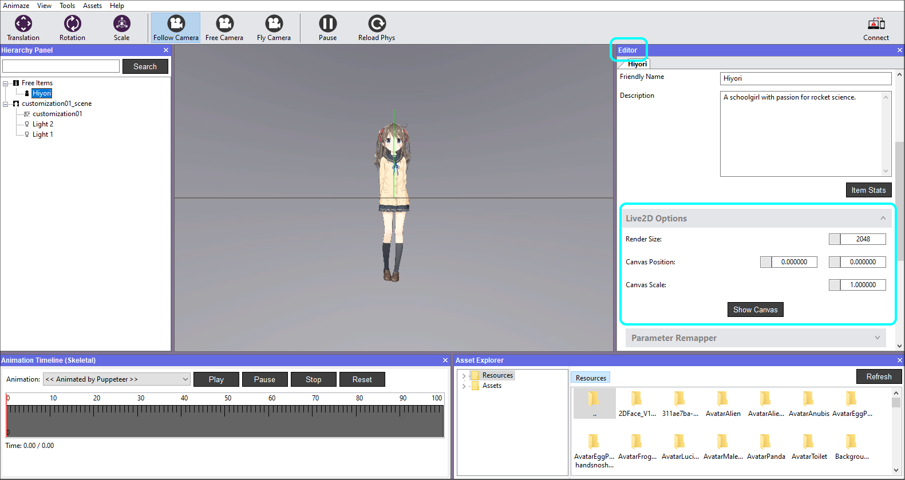
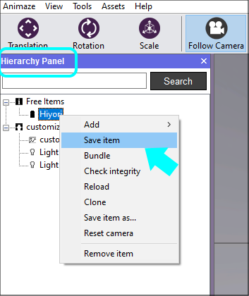

Change the rendering options
The Animaze Engine integrates Cubism runtime to render Live2D models. The 2D rendering resolution is controlled through Animaze and you can also configure that for every Live2D model through the Editor.
1.In the Editor Panel scroll down to the Live2D Options and click on it to expand the tab

2. Set the Live2D model rendering resolution by changing the Size values.
- higher rendering resolutions will make the Live2D model have crisp edges but will impact performance (fps drop or phone heating).
- lower rendering resolutions will make the Live2D model have blurry edges but will have less of a performance toll (smoother refresh rates).
3. Once you’re done render inputs, you’ll need to save the item for the changes to remain persistent.
